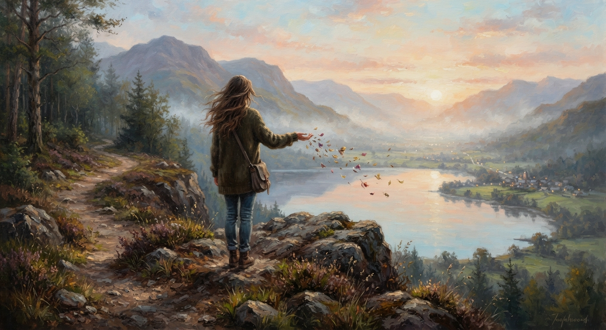

The Last Word
This poem is about closure, release, and letting go of a chapter that once meant so much.
Some stories do not end with the words we hoped to hear. Sometimes, silence becomes the ending. After carrying the
remnants of an old love for many years, I finally reached the place where I could accept what could not be
changed.
The olive branch represents my final gesture of peace. What followed was silence, and I chose to accept that silence
rather than continue reaching for an answer.
This poem is my farewell to what once was. Not because it never mattered, but because it mattered enough to deserve a
peaceful ending.
I release the hurt, the unanswered questions, and everything that no longer belongs in my present.
I close the chapter with a quiet heart and open hands, grateful for what once was and free to walk forward.
Some chapters are not meant to be rewritten. They are meant to be released.
🎵 "A Silent Goodbye" - EchoWaveMutawe (Pixabay Music)
